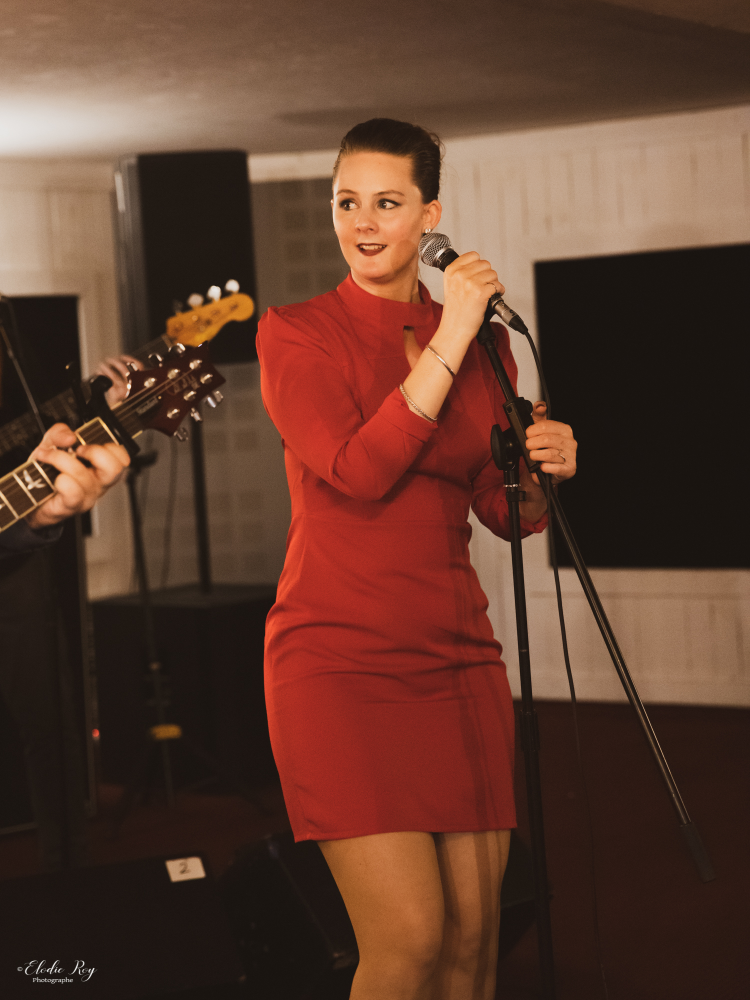
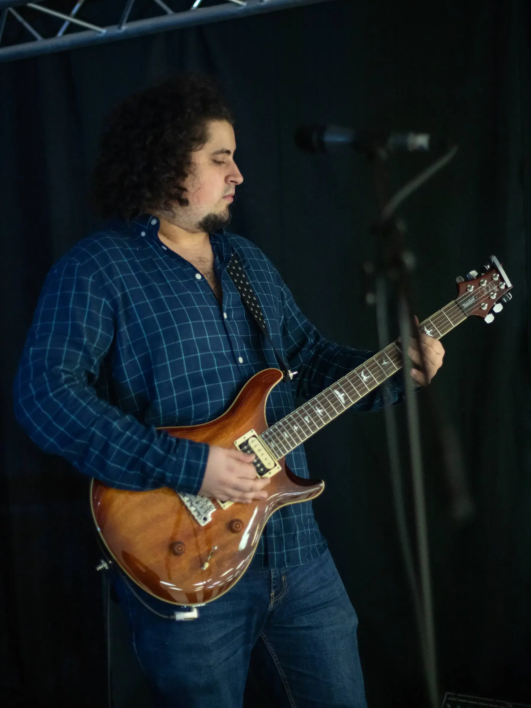
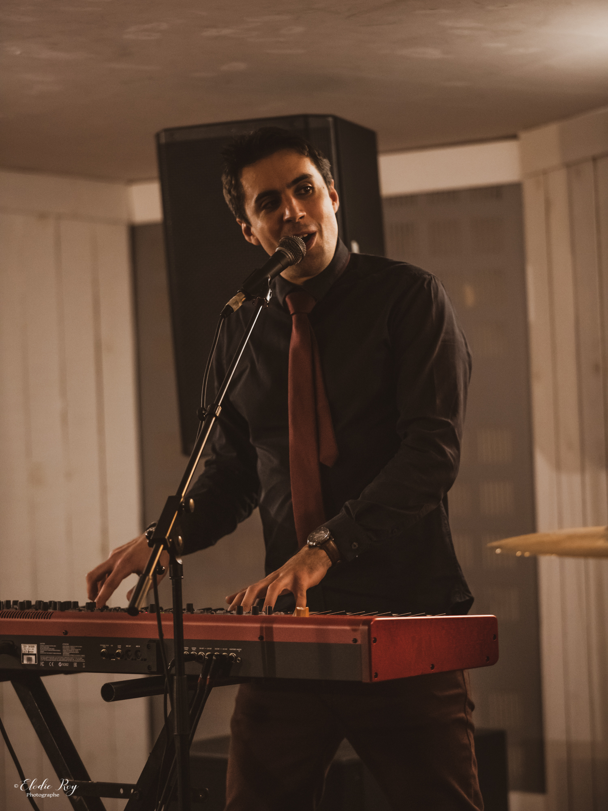
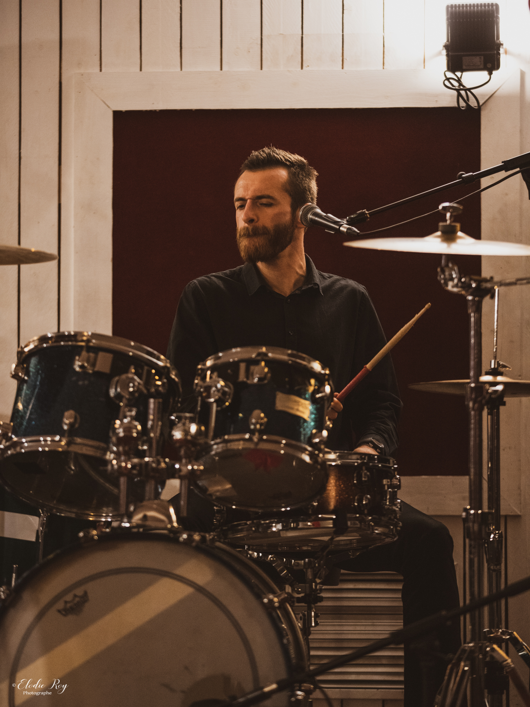

Formé en 2021, 5 O'clock est composé de 5 musiciens (Fanny, Samuel, Nicolas, Léo et Marc). Influencé par la culture Pop Rock, le groupe interprète un répertoire musical de 50 ans d’histoires à mi-chemin entre les grands classiques sixties comme The Beatles ou The Supremes et les tubes actuels comme Pharell Williams, Avicii en passant par Queen , Bon Jovi et d’autres artistes. 5 O'clock, c’est avant tout une interprétation musicale qui vous transporte dans un univers intemporel chargé d’émotions avec une certaine sensibilité sonore. Dans une ambiance électrique le groupe vous embarque sur les dancefloors des clubs, bars, mariages, anniversaires et soirées d'entreprises !

Fanny Revay
Chanteuse
Chanteuse professionnelle et professeure de chant dans les écoles depuis 2016, Fanny est diplômée d'une licence en musicologie en 2017, et d'un DEM en 2019. Elle prépare actuellement un DNSPM au Pole Sup'. Fanny s'est régulièrement produite pendant 3 ans aux Trois Mailletz de 2017 à 2020, et a aussi été choriste pour la production Aïda Sanxay en 2019.

Nicolas Maillols
Guitariste
Passionné de musique dès son enfance et fan de Pop Rock des années 80, Nicolas est guitariste autodidacte depuis 15 ans. Diplômé d'une licence en musicologie en 2020, Nicolas est devenu compositeur-arrangeur et ingénieur du son en tant qu’indépendant. En parallèle, il a effectué des missions dans l'univers événementiel en tant que technicien audiovisuel de 2016 a 2020.

Marc Nancy
Claviériste
Pianiste de formation classique, avec une forte appétence pour le Rock et le Jazz, Marc a étudié dans diverses écoles de musique de 1998 à 2008. En 2014 il compose et enregistre un CD pour financer le pèlerinage des jeunes aux JMJ (Journées Mondiales de la Jeunesse) de Rio. En 2018 il assure la première partie de Nolwenn Leroy avec le groupe NewStep à Antony. Et en 2020, il met en musique le court métrage "Un Rêve" de Jérôme Piel-Desruissaux destiné au Nikon Festival Film

Samuel Durand
Bassiste
Musicien passionné depuis le plus jeune âge, fan de Rock Old School. Samuel est diplômé d'une licence en musicologie et d'un DUMI (Diplôme du Musicien Intervenant). Il enseigne actuellement la musique au conservatoire de Villemoisson-sur-Orge, et fait du coaching de groupe dans le cadre d'ateliers dispensés par sa ville. Samuel a aussi participé à plusieurs projets musicaux dont un groupe de reprise de Queen en tant que bassiste et The Beatles en tant que guitariste.

Léo Ané
Batteur
Batteur depuis 14 ans, Léo commence la musique à l'âge de 3 ans en commençant par le clavecin puis la batterie au Conservatoire Municipal de Franconville. En 2020 il sort un album de Hard FM avec le groupe Dog Temper. Diplômé d'un Master MEEF espagnol, il est aujourd'hui professeur d'espagnol dans les lycées.
-- : --
-- : --
-- : --
-- : --
-- : --
-- : --